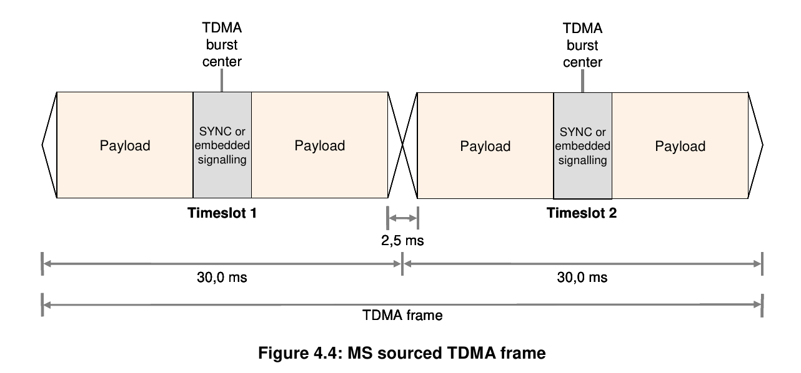

Implementation of an ETSI compliant DMR base station with the LimeNet Micro SDR working in TDMA mode (two inbound timeslots)
By Adrian, Sat 28 August 2021, in category Amateur radio
By Adrian, Sat 28 August 2021, in category Amateur radio
This article is a follow-up to the previous attempt to implement DMR land-mobile radio standard with SDR transceivers which can be read here: DMR hotspot with a PlutoSDR device. If you haven't already, it is suggested to read the previous article first to have an understanding of the software stack used, while this article will expand on the TDMA features required for a full DMR base station implementation. Further on, a DMR base station will be referred to as "BS" and the mobile station as the "MS".
While the previous implementation described above allowed the operation of a full duplex DMR BS, real TDMA operation was not possible because the GNU radio flowgraph latency is not deterministic, so some modifications were made to MMDVM in order to only receive timeslot 2 regardless of the timeslot used by MS transmissions, rendering one inbound channel unusable. The previous implementation also used gr-osmosdr as a wrapper to communicated with SDR devices, which made it compatible with most devices currently on the market. This has now changed, since gr-osmosdr does not support passing GNU radio FPGA timestamps.
This time, we leverage MMDVM-SDR (MMDVM-SDR) operating as designed and receiving both inbound timeslots of a DMR BS. To operate in TDMA mode, we also need to employ SDR hardware which is capable of providing FPGA timestamps of received samples, and also able to transmit sample bursts at specified timestamps. The candidates which were tested were the LimeSDR-mini and LimeNET Micro devices, as they both provide FPGA timestamps. The LimeNET Micro was ultimately chosen for its ability to operate standalone. The LimeRFE device was used as a radio frontend for filtering and power amplification purposes, with the automatic control being provided by QRadioLink.
The ETSI DMR specification relevant to this work can be found here: ETSI TS 102 361-1 V1.4.5 (2007-12). Some information below will be familiar:
DMR is a radio standard which implements a double timeslot time division multiple access scheme (TDMA). This means that each base station (BS) can carry two radio conversations simultaneously in a single 12.5 kHz channnel, effectively offering double the capacity compared to a single FM 12.5 kHz repeater. More than that, the DMR protocol offers call routing between logical channels called talk groups, as well as direct calls between two DMR radios identified by a unique ID. Besides these advantages, the TDMA access scheme requires very strict timing for MS access to the BS, and the mobile station needs to be time synchronized to the BS and transmit within a specific window of time in order to be received in its own timeslot and avoid interfering with the other timeslot where a different radio transmission by a second MS can occur independently.
The structure of the BS-originated TDMA frame transmission is depicted below:
The structure of the MS-originated TDMA frame transmission is depicted below:

The DMR BS needs to be able to receive samples in each timeslot aligned in time with samples transmitted in each timeslot. For the purposes of simplifying the concept, the BS is transmitting both timeslots and CACH bursts continuously. The time base for the MS to align to is set by the BS transmission.
MMDVM implements OSI layers 3, 2 and partly 1, and provides four level FSK symbols at a rate of 24000 samples/second. These symbols are already filtered with a root-raised cosine filter.
The GNU radio transmit flowgraph implemented in QRadioLink begins with a signal source which gets these samples from MMDVM-SDR via a ZeroMQ socket, handles frequency modulation, filtering and up-sampling. The flowgraph ends with a LimeSDR sink which sends the samples to a LimeSDR device for transmission.
On the opposite side, samples received by the LimeSDR devices enter the GNU radio receive flowgraph of QRadioLink through a LimeSDR source, are downsampled to 24000 samples/second and filtered, and finally frequency demodulated, before being sent via ZeroMQ packets to MMDVM-SDR.
The ZeroMQ custom sinks and sources implemented in QRadioLink use IPC (inter-process communication) as a delivery mechanism and are now different to the GNU radio ZeroMQ sinks and sources for the purposes of custom processing.
QRadioLink also serves here as an user interface to handle SDR tuning and setup of RX/TX offsets necessary for a full duplex base station, while also handling automatic control and band operation setup of the LimeRFE radio frontend.
The LimeSDR source provides FPGA timstamps for each packet of samples received. The packet size can vary, however these timestamps are converted to "rx_time" GNU radio tags containing a tuple of:
During implementation and testing, a couple of issues became apparent with the SDR implementation of the DMR BS.
For operation instructions, refer to the previous article on this topic: DMR hotspot with a PlutoSDR device as the instructions apply here as well.
The TDMA functionality described here can now be found in the mmdvm_tdma branch of the QRadioLink source repository and will be included in a release in the near future. The matching code for MMDVM-SDR can be found in the zmq_double_slot branch here: MMDVM-SDR but it is not currently compatible with regular GNU radio flowgraphs designed with GNU radio companion, due to the custom code required for TDMA operation.
This article was made possible by Jonathan Naylor G4KLX (the author of MMDVM and MMDVMHost), Peter Rakesh (the author of the Linux port, MMDVM-SDR) and Lime Microsystems who supplied the SDR transceiver used for this purpose.
Video of the LimeNET Micro as a SDR DMR BS receiving TDMA trasnmissions from the DMR MS: